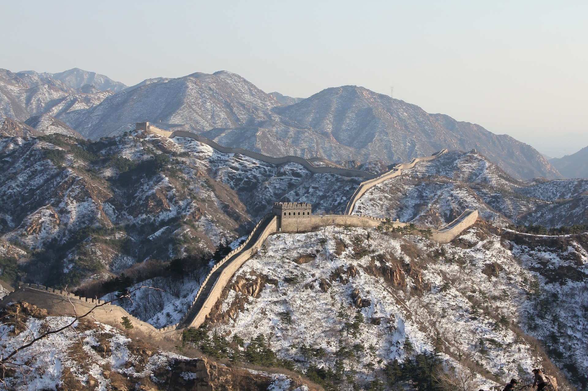
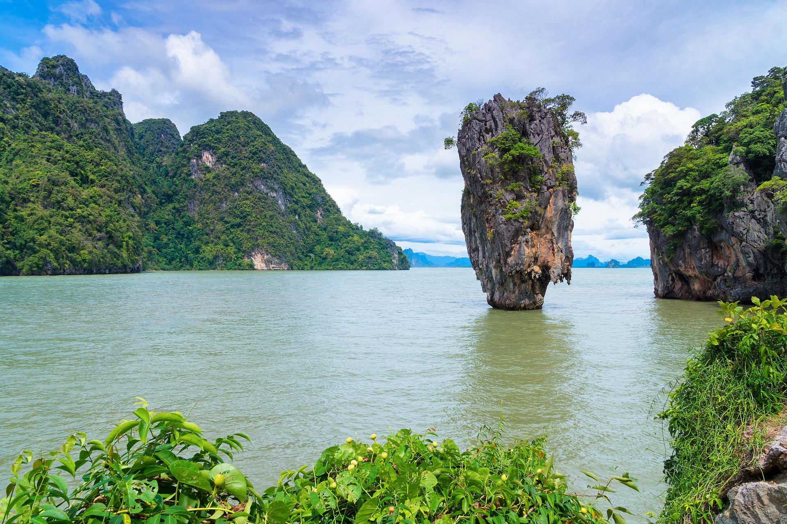

CHINA (56 millones de visitantes anuales)

Gran Muralla China.
China, gran país que debes visitar al menos una vez en tu vida.
Nuestro viaje por China comienza dando un paseo por la plaza de Tiananmen y por la gran calle comercial Wangfujing Dajie o Calle Dorada en Pekín, su capital. Al día siguiente, no debemos perdernos la Ciudad Prohibida y el Parque de Beihai, donde subiremos a la Padoga Blanca. Por la tarde, deambularemos por uno de los Hutongs de Pekín, Yandai Xiejie, y por el lago Quian Hai.
Al tercer día, iremos a ver la Gran Muralla, una de las siete maravillas del mundo moderno. Por la noche, tomaremos un vuelo a Xian, donde se encuentran los Guerreros de Terracota ...
23/04/2017-10:32
MALASIA (28 millones de visitantes anuales)

Torres Petronas, Kuala Lumpur.
Malasia, donde se juntan modernidad y tradición.
Nuestro viaje comienza allí donde confluyen los ríos Klang y Gombak, Kuala Lumpur. Después de un recorrido por la ciudad que nos permite ver las famosas Torres Petronas y la plaza de la Independencia, nos detendremos para visitar el edificio del sultán Abdul Samad y la Mezquita Jamek. Por la tarde, viajaremos al norte para adentrarnos en las Cuevas de Batu.
Al segundo día, continuaremos más al norte hasta llegar a las Cameron Highlands, un hermoso lugar caracterizado por extensas plantaciones de té...
12/04/2017-11:02
TAILANDIA (25 millones de visitantes anuales)

Bahía de Phang Nga.
Tailandia, el paraíso terrenal.
La primera noche de nuestro viaje la pasaremos dando un paseo por la Bangkok, su capital, y visitaremos alguno de sus mercados nocturnos. Al día siguiente visitaremos el Palacio Real y los templos del Buda Esmeralda, Buda Reclinado (Wat Phra Chethupon) y el Templo del Amanecer (Wat Arun). Por la tarde, alquilaremos una barca para explorar los mejores canales (khlongs) de la ciudad y al atardecer nos dirigiremos a la animada Khaosan Road, en Chinatown, para tomar una cerveza y cenar.
A la mañana siguiente, visitaremos los mejores mercados flotantes de la ciudad (Damnoen Saduak, Amphawa, Taling Chan…) y sus alrededores. Por la noche tomaremos un tren que nos conducirá a Chiang Mai...
30/04/2017-17:18